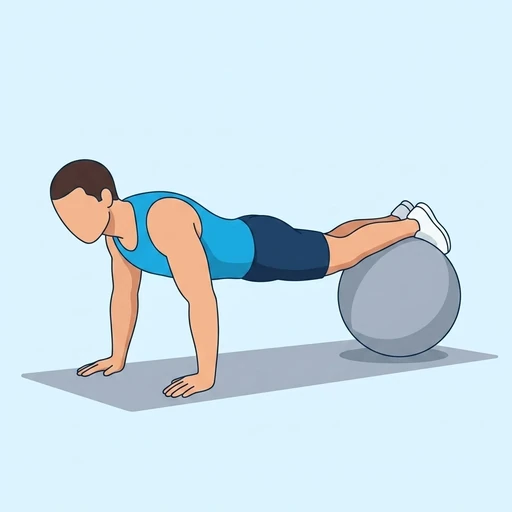
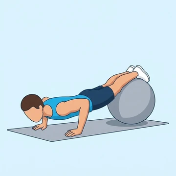
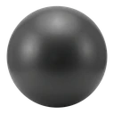

Stability Ball Push-Up
A push-up performed with the feet on a stability ball, adding a strong anti-rotation demand to a standard push-up.
Chest · Stability Ball · Intermediate


Muscles worked by the Stability Ball Push-Up
Primary
Secondary
Also called: pec, pecs, pectoralis major, pectoralis, chest muscles.
Equipment

Stability BallAlso called: swiss ball, exercise ball, yoga ball, physio ball, gym ball, balance ball.
How to do the Stability Ball Push-Up
- Kneel in front of a stability ball and place your shins or feet on top of it.
- Set the hands on the floor under the shoulders in a high-plank position.
- Brace the core hard — the ball will want to roll sideways.
- Lower the chest to the floor by bending the elbows.
- Press back up to the starting position without letting the ball wobble.
- Repeat for the recommended number of repetitions.
Form tips
- Start with shins on the ball; feet-only is much harder.
- If the ball drifts side to side, you're lacking core bracing — slow down.
At a glance
| Body part | Chest |
|---|---|
| Category | Strength |
| Force type | Push |
| Mechanic | Compound |
| Difficulty | Intermediate |
| Equipment | Stability Ball |
| Goals | Hypertrophy, Core |
| Tags | Push day, Calisthenics, Core |
| MET | 6.0 (metabolic equivalent, for calorie estimates) |
| Unilateral | No |
| Bodyweight | No |
| Dataset id | stability-ball-push-up |
Stability Ball Push-Up in German & Spanish
| German | Stability-Ball-Push-Up |
|---|---|
| Spanish | Push-Up con Balón de Estabilidad |
Descriptions, instructions and tips ship in all three languages in the JSON.
Exercise data (JSON)
The record below is exactly what exercises.json ships for this exercise — names, descriptions, instructions and tips in English, German and Spanish.
{
"id": "stability-ball-push-up",
"name_en": "Stability Ball Push-Up",
"name_de": "Stability-Ball-Push-Up",
"name_es": "Push-Up con Balón de Estabilidad",
"description_en": "A push-up performed with the feet on a stability ball, adding a strong anti-rotation demand to a standard push-up.",
"description_de": "Ein Push-Up mit den Füßen auf einem Stability Ball, der dem normalen Push-Up eine starke Anti-Rotationsanforderung hinzufügt.",
"description_es": "Un push-up realizado con los pies sobre un balón de estabilidad, que añade una fuerte demanda antirotación al push-up estándar.",
"category": "strength",
"force_type": "push",
"mechanic": "compound",
"difficulty": "intermediate",
"equipment": "stability_ball",
"body_part": "chest",
"primary_muscles": [
"pectoralis_major"
],
"secondary_muscles": [
"anterior_deltoid",
"rectus_abdominis",
"serratus_anterior",
"triceps_brachii"
],
"goals": [
"hypertrophy",
"core"
],
"tags": [
"push_day",
"calisthenics",
"core"
],
"variation_group": "push-up",
"is_unilateral": false,
"is_bodyweight": false,
"instructions_en": [
"Kneel in front of a stability ball and place your shins or feet on top of it.",
"Set the hands on the floor under the shoulders in a high-plank position.",
"Brace the core hard — the ball will want to roll sideways.",
"Lower the chest to the floor by bending the elbows.",
"Press back up to the starting position without letting the ball wobble.",
"Repeat for the recommended number of repetitions."
],
"instructions_de": [
"Knie vor dem Stability Ball und lege Schienbeine oder Füße darauf ab.",
"Hände auf dem Boden unter den Schultern in der hohen Plank-Position.",
"Spanne den Core fest an — der Ball will zur Seite rollen.",
"Senke die Brust zum Boden, indem du die Ellbogen beugst.",
"Drücke zurück in die Ausgangsposition, ohne den Ball wackeln zu lassen.",
"Wiederhole für die empfohlene Anzahl an Wiederholungen."
],
"instructions_es": [
"Arrodíllate frente a un balón de estabilidad y coloca las espinillas o los pies encima.",
"Apoya las manos en el suelo bajo los hombros en posición de plancha alta.",
"Contrae fuerte el core: el balón querrá rodar hacia los lados.",
"Baja el pecho al suelo doblando los codos.",
"Vuelve a empujar hasta la posición inicial sin dejar que el balón se tambalee.",
"Repite el número de repeticiones recomendado."
],
"tips_en": [
"Start with shins on the ball; feet-only is much harder.",
"If the ball drifts side to side, you're lacking core bracing — slow down."
],
"tips_de": [
"Beginne mit Schienbeinen auf dem Ball; nur Füße ist deutlich schwerer.",
"Driftet der Ball seitwärts, fehlt die Core-Spannung — verlangsame."
],
"tips_es": [
"Comienza con las espinillas sobre el balón; solo con los pies es mucho más difícil.",
"Si el balón se desplaza de lado a lado, falta contracción del core: reduce la velocidad."
],
"met": 6.0,
"images": {
"flat": {
"start": "images/flat/stability-ball-push-up-start.webp",
"peak": "images/flat/stability-ball-push-up-peak.webp"
}
}
}Fetch just this exercise
const { exercises } = await fetch(
"https://exercise-dataset.com/exercises.json"
).then(r => r.json());
const ex = exercises.find(e => e.id === "stability-ball-push-up");Free for personal and commercial in-app use with attribution (“Exercise data by RepDB”) — see the license and ready-made attribution snippets. Redistributing the data as a dataset or API is not permitted.